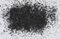

|
|
(For further information on spectroscopy, see:
http://speclab.cr.usgs.gov)
TITLE: Magnetite HS195 DESCRIPT
DOCUMENTATION_FORMAT: MINERAL
SAMPLE_ID: HS195
MINERAL_TYPE: Oxide
MINERAL: Magnetite (Spinel group)
FORMULA: Fe+2(Fe+3)2O4
FORMULA_HTML: Fe+2Fe+32O4
COLLECTION_LOCALITY: Ishpeming, Michigan
ORIGINAL_DONOR: Hunt and Salisbury Collection
CURRENT_SAMPLE_LOCATION: USGS Denver Spectroscopy Laboratory
ULTIMATE_SAMPLE_LOCATION: USGS Denver Spectroscopy Laboratory
SAMPLE_DESCRIPTION:
Forms a series with Magnesioferrite and with Jacobsite.
The spectrum of this sample was originally published in:
Hunt, G.R., J.W. Salisbury, and C.J. Lenhoff, 1971, Visible and near-infrared spectra of minerals and rocks: III. Oxides and hydroxides. Modern Geology, v. 2, p. 195-205.
With the note: "This sample is slightly contaminated with (spectrally neutral) quartz. Like the previous sample [HS78], it displays typically opaque behavior, decreasing in reflectivity with decreasing particle size. It is unusual in that it also exhibits a very weak band near 1.0µm due to the ferrous ion. The explanation for its opacity is as given above for [Magnetite HS78]."
The sample measured for the library was HS195.3 which was dry sieved to the grain size interval 74-250µm.
IMAGE_OF_SAMPLE:

END_SAMPLE_DESCRIPTION.
XRD_ANALYSIS:
40 kV - 30 mA, 7.3-9.5 keV
File: magnti195.out, -.mdi, ground once; mgt195-2.*, ground twice
References: JCPDS 19-629; Huebner's reference patterns; SEM X-ray spectroscopy.
Found: Magnetite, traces of an alkali feldspar (albite?), chlorite, and an
unidentified phase with reflections at 3.31, 3.13, and 3.05 Angstroms.
Comments: Magnetite is well crystallized and peak compositions are consistent with
Fe3O4 composition. SEM suggests grains containing Ca-Mn-Mg-Fe (carbonate?).
END_XRD_ANALYSIS.
COMPOSITIONAL_ANALYSIS_TYPE: None # XRF, EM(WDS), ICP(Trace), WChem
COMPOSITION_TRACE:
COMPOSITION_DISCUSSION:
None.
END_COMPOSITION_DISCUSSION.
MICROSCOPIC_EXAMINATION:
END_MICROSCOPIC_EXAMINATION.
SPECTROSCOPIC_DISCUSSION:
END_SPECTROSCOPIC_DISCUSSION.
SPECTRAL_PURITY: 1b2b3b4_ # 1= 0.2-3, 2= 1.5-6, 3= 6-25, 4= 20-150 microns
| LIB_SPECTRA_HED: | where | Wave Range | Av_Rs_Pwr | Comment |
|---|---|---|---|---|
| LIB_SPECTRA: | splib04a r 2864 | 0.2-3.0µm | 200 | g.s.= |
| LIB_SPECTRA: | splib05a r 4243 | 0.2-3.0µm | 200 | g.s.= |
| LIB_SPECTRA: | splib06a r 13178 | g.s.= | ||
| LIB_SPECTRA: | splib06a r 13189 | g.s.= |
{kind=link}